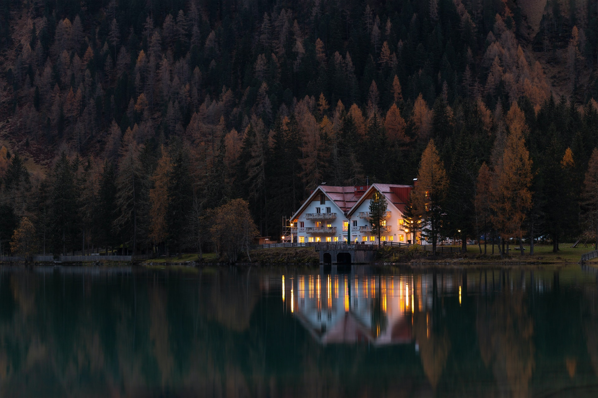

<section class="w-100 px-5 bg-ultra-light setting-section"
    style="position:relative;display: flex;flex-direction: column;align-items: center;box-sizing: border-box;">
    <h3 style="float: left;">Appearance</h3>
    <div class="d-flex shadow mb-2 py-2 bg-ultra-light"
        style="position: relative;align-items: flex-start;justify-content: space-around;min-width: 50vw;">
        <button mat-raised-button class="bg-dark w-100 mr-1">
            <!-- <mat-icon class="mat-icon-sm pt-1">add</mat-icon> -->
            <small>LIGHT MODE</small>
        </button>
        <button mat-raised-button class="bg-dark  w-100">
            <!-- <mat-icon class="mat-icon-sm pt-1">lock</mat-icon> -->
            <small>DARK MODE</small>
        </button>

    </div>
    <h3>Background</h3>
    <div class="d-flex shadow mb-2"
        style="position: relative;align-items: flex-start;justify-content: space-around;min-width: 50vw;height: 15rem;">
            
            <button mat-raised-button style="position: absolute;z-index: 1000;right: 1rem;top: 1rem;">Change</button>
    </div>
    
</section>